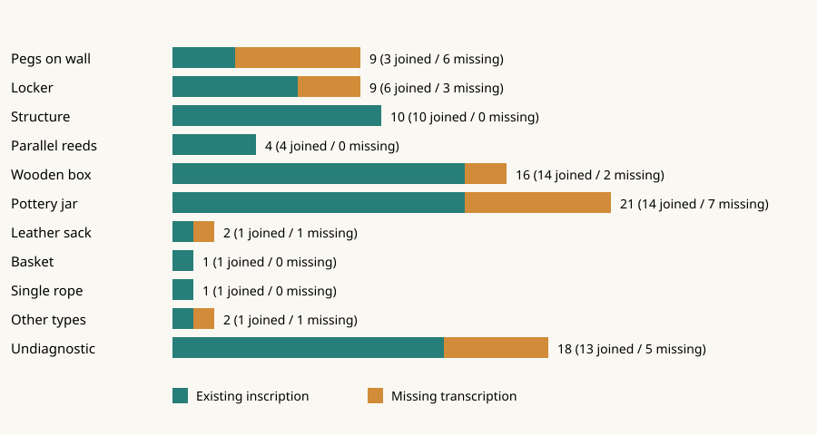
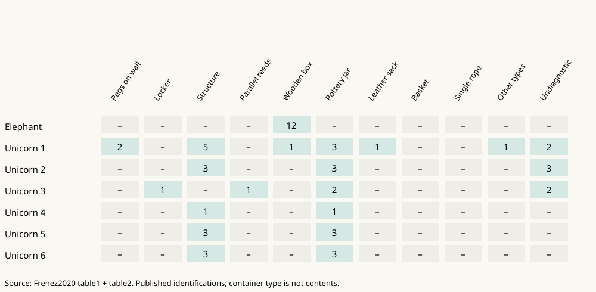

23 November 2026 · full extraction of Frenez 2020 tables 1–2
These identify what the clay was attached to: a jar, a box, a bag, a locker, a structure or another support. They do not identify the stored commodity. Question marks in the source mean unknown find context, not an uncertain support classification. All 93 category/context cells were checked against the source images.

| Object | Earlier subtype inference | Published physical category |
|---|---|---|
| L-125 | TAG:L interpreted as soft cloth/reed/cord bale | Wooden box |
| L-138 | TAG:L interpreted as soft cloth/reed/cord bale | Structure |
| L-142 | TAG:P interpreted as smooth token without packaging | Wooden box |
The original subtype codes are preserved. The source categories replace those generic assumptions for this comparison; this is not a silent edit of Cúper's corpus. Other old labels are corroborated or remain undiagnostic.
The full source matrix contains seven published repeated-die groups, 56 memberships across 43 sealings. Six groups span more than one specific support category. These identifications and the general cross-container observation were already published by Parpola/Frenez. Our addition is the full machine-readable join. Multiple impressions mean one sealing can belong to several groups; memberships cannot be counted as independent trials. The source matrix identifies the object carrying a die impression. It does not assign each encoded face to that die; the face export preserves that distinction.

| Published die | Sealings | Specific support categories | Already represented in old backing evidence |
|---|---|---|---|
| elephant | 12 | wooden_box | True |
| unicorn_1 | 15 | leather_sack; pegs_on_wall; pottery_jar; structure; wooden_box | True |
| unicorn_2 | 9 | pottery_jar; structure | False |
| unicorn_3 | 6 | locker; parallel_reeds; pottery_jar | True |
| unicorn_4 | 2 | pottery_jar; structure | True |
| unicorn_5 | 6 | pottery_jar; structure | True |
| unicorn_6 | 6 | pottery_jar; structure | True |
For example, the source's Unicorn1 seal occurs on wooden boxes, a leather sack, pottery jars, architectural pegs and structures. That weakens a claim that this seal exclusively labels one container type. It does not distinguish an issuer from a commodity that could be stored in different containers. The elephant group is confined to wooden boxes in this table.
| Sign | Fixed proposed meaning | Joined objects carrying sign | Result |
|---|---|---|---|
| 440 | literal vessel (frozen key: goblet/corner) | 0 | No sign-bearing exposure among joined objects; missing transcriptions remain unknown. |
| 690 | narrow storehouse (frozen key: bundle/store) | 0 | No sign-bearing exposure among joined objects; missing transcriptions remain unknown. |
Neither sign occurs in the 68 objects with joined texts. The other 25 remain unknown; no zero is imputed to them. Thus neither fixed prediction was tested, and no p-value is reported. The source key labels are goblet/corner for 440 and bundle/store for 690, which are wider than the earlier vessel/storehouse examples. No other word was substituted after inspecting the outcomes.
Of 93 source objects, 24 already have specific subtype/backing evidence or were inspected in the previous follow-up. The remaining 69 acquire a label here; 44 have existing texts. After excluding known repeated dies and exact complete texts connected to prior evidence, 30 text-bearing rows remain provisionally unlinked. They are not 30 proven independent test cases: damaged text and unknown dies can hide further copies. Support categories also include undiagnostic records. The full table preserves these distinctions.
Existing proposed readings are quoted from the repository, not endorsed translations. Older volume estimates in those readings are preserved as historical source text. “Missing transcription” is separate from an unknown sign inside an encoded text.
| Object | Physical support | Find context | Impressions | Existing sign sequences | Existing proposed reading | Published repeated die | Prior evidence | Recovered photo / review |
|---|---|---|---|---|---|---|---|---|
| L-124 | Other types | Warehouse | 1 | 705-500-741-001-055-220-740-090 | Sea-voyage — Manager of the Single-House 1 Twelve-Star (*paṉṉiru-mīṉ) House | unicorn_1 | Existing backing evidence; same published die as prior evidence | |
| L-125 | Wooden box | Warehouse | 1 | 705-500-741-001-055-220-740-090 | Sea-voyage — Manager of the Single-House 1 Twelve-Star (*paṉṉiru-mīṉ) House | unicorn_1 | Existing backing evidence; same published die as prior evidence | |
| L-126 | Leather sack | Warehouse | 1 | 705-500-741-001-055-220-740-090 | Sea-voyage — Manager of the Single-House 1 Twelve-Star (*paṉṉiru-mīṉ) House | unicorn_1 | Existing backing evidence; same published die as prior evidence | |
| L-127 | Undiagnostic | Warehouse | 1 | 705-500-741-001-055-220-740-090 | Sea-voyage — Manager of the Single-House 1 Twelve-Star (*paṉṉiru-mīṉ) House | unicorn_1 | Existing backing evidence; same published die as prior evidence | |
| L-128 | Undiagnostic | Warehouse | 1 | 705-500-741-001-055-220-740-090 | Sea-voyage — Manager of the Single-House 1 Twelve-Star (*paṉṉiru-mīṉ) House | unicorn_1 | Existing backing evidence; same published die as prior evidence | |
| L-129 | Pottery jar | Warehouse | 1 | 705-500-741-001-055-220-740-090 | Sea-voyage — Manager of the Single-House 1 Twelve-Star (*paṉṉiru-mīṉ) House | unicorn_1 | New backing label; same published die as prior evidence | |
| L-130 | Structure | Warehouse | 1 | 861-002-236 | 2 kāṇam-shares — Bright-Star(Caged) | unicorn_2 | New backing label | |
| L-131 | Undiagnostic | Warehouse | 1 | 861-002-236 | 2 kāṇam-shares — Bright-Star(Caged) | unicorn_2 | New backing label | |
| L-132 | Undiagnostic | Warehouse | 1 | 000-226 | [lost sign], Fish-crate. | unicorn_2 | New backing label | |
| L-133 | Pottery jar | Warehouse | 1 | 861-002 | two shares. | unicorn_2 | New backing label | |
| L-134 | Parallel reeds | Warehouse | 1 | 617-002-240-220-233-520 | Twin-Plot/Loom Two-Rayed-Star Star Dawn-Star, Lord (*vēḷ) | unicorn_3 | New backing label; same published die as prior evidence | |
| L-135 | Pottery jar | Warehouse | 1 | No transcription joined | No proposed reading joined | unicorn_3 | New backing label; same published die as prior evidence | Photo Partial unicorn and worn text traces; published repeated-die group unicorn3; no independent sign transcription added. |
| L-136 | Locker | Warehouse | 1 | 617-002 | Two king's servants. | unicorn_3 | New backing label; same published die as prior evidence | |
| L-137 | Pottery jar | Warehouse | 1 | 820-002-000-000 | two quarters: Two [lost sign]. | unicorn_4 | New backing label; same published die as prior evidence | |
| L-138 | Structure | Warehouse | 1 | 000-002-070-520 | [lost sign]-Two-Arrow, chief. | unicorn_4 | Existing backing evidence; same published die as prior evidence | |
| L-139 | Pottery jar | Warehouse | 1 | 880-002-032-590-390 | Four [880]; Chest, cotton. | unicorn_5 | New backing label; same published die as prior evidence | |
| L-140 | Parallel reeds | Warehouse | 1 | 000-000-000-740-151 | Keeper of the [lost sign]-[lost sign]-[lost sign] house. | No repeated die assigned in table 1 | New backing label | |
| L-141 | Structure | Other context | 1 | 000-000-700-031-552-740 | Of the [lost sign]-[lost sign]-Cup house (allowance: one [552]). | No repeated die assigned in table 1 | New backing label | |
| L-142 | Wooden box | Warehouse | 1 | 692-031-001-015-140 | Assembly; Seven ladies. | No repeated die assigned in table 1 | Existing backing evidence | |
| L-143 | Wooden box | Unknown context | 1 | 920-060-004-220-388-740 | month: of the Four-Star-King house. | No repeated die assigned in table 1 | Existing backing evidence | |
| L-144 | Locker | Warehouse | 1 | 220-000-706-320 | Star, [lost sign], kalam, ration measure. | No repeated die assigned in table 1 | New backing label | |
| L-145 | Structure | Other context | 1 | 550-002-415-390 | District 2 Branch/Control Weave/Cloth | No repeated die assigned in table 1 | New backing label | |
| L-146 | Parallel reeds | Other context | 1 | 705-033-520 | 3 kalam (~333 L), Lord (*vēḷ) | No repeated die assigned in table 1 | Existing backing evidence | |
| L-147 | Pottery jar | Warehouse | 1 | 000-000-031-269 | Two [lost sign]; One [269]. | No repeated die assigned in table 1 | New backing label | |
| L-148 | Locker | Unknown context | 1 | 820-060-000-000 | quarter: Two [lost sign]. | No repeated die assigned in table 1 | New backing label | |
| L-149 | Locker | Unknown context | 1 | 000-798-000 | [lost sign], descendant, [lost sign]. | No repeated die assigned in table 1 | New backing label | |
| L-150 | Locker | Other context | 2 | No transcription joined | No proposed reading joined | No repeated die assigned in table 1 | New backing label | No exact-object photograph recovered in the tracked image set. |
| L-151 | Other types | Unknown context | 1 | No transcription joined | No proposed reading joined | No repeated die assigned in table 1 | New backing label | No exact-object photograph recovered in the tracked image set. |
| L-152 | Pegs on wall | Warehouse | 1 | No transcription joined | No proposed reading joined | No repeated die assigned in table 1 | New backing label | No exact-object photograph recovered in the tracked image set. |
| L-153 | Undiagnostic | Other context | 1 | 838 | Produce. | No repeated die assigned in table 1 | New backing label | |
| L-154 | Pegs on wall | Warehouse | 1 | No transcription joined | No proposed reading joined | No repeated die assigned in table 1 | New backing label | Photo Small partial seal impression with faint upper text; no independent sign transcription added. |
| L-155 | Pegs on wall | Unknown context | 1 | No transcription joined | No proposed reading joined | No repeated die assigned in table 1 | New backing label | Photo Heavily worn impression; no independent sign transcription added. |
| L-156 | Undiagnostic | Unknown context | 2 | No transcription joined | No proposed reading joined | No repeated die assigned in table 1 | New backing label | Photo Two partial impressions visible; dark catalogue annotations are not automatically ancient signs; no independent transcription added. |
| L-157 | Pegs on wall | Warehouse | 1 | No transcription joined | No proposed reading joined | No repeated die assigned in table 1 | New backing label | Photo Worn impression and white modern collection annotation; annotation is not used as inscription evidence. |
| L-158 | Locker | Warehouse | 1 | No transcription joined | No proposed reading joined | No repeated die assigned in table 1 | New backing label | Photo Partial animal and very worn upper field; no independent sign transcription added. |
| L-159 | Pottery jar | Warehouse | 1 | No transcription joined | No proposed reading joined | No repeated die assigned in table 1 | New backing label | Photo Partial unicorn impression; conspicuous white number and arrow are modern annotations and are not read as ancient signs. |
| L-160 | Undiagnostic | Warehouse | 1 | No transcription joined | No proposed reading joined | No repeated die assigned in table 1 | New backing label | Photo Partial unicorn impression; no secure complete text recovered. |
| L-161 | Wooden box | Warehouse | 1 | 817-002-048-740 | two shares: of the Seven house. | elephant | Existing backing evidence; same published die as prior evidence | |
| L-162 | Wooden box | Warehouse | 1 | 817-002-048-740 | two shares: of the Seven house. | elephant | Existing backing evidence; same published die as prior evidence | |
| L-163 | Wooden box | Warehouse | 1 | 817-002-048-740 | two shares: of the Seven house. | elephant | Existing backing evidence; same published die as prior evidence | |
| L-164 | Wooden box | Warehouse | 1 | 817-002-048-740 | two shares: of the Seven house. | elephant | Existing backing evidence; same published die as prior evidence | |
| L-165 | Wooden box | Warehouse | 1 | 817-002-048-740 | two shares: of the Seven house. | elephant | Existing backing evidence; same published die as prior evidence | |
| L-166 | Wooden box | Warehouse | 1 | 817-002-048-740 | two shares: of the Seven house. | elephant | Existing backing evidence; same published die as prior evidence | |
| L-167 | Wooden box | Warehouse | 1 | 817-002-048-740 | two shares: of the Seven house. | elephant | Existing backing evidence; same published die as prior evidence | |
| L-168 | Wooden box | Warehouse | 1 | 817-002-048-740 | two shares: of the Seven house. | elephant | Existing backing evidence; same published die as prior evidence | |
| L-169 | Wooden box | Warehouse | 1 | 817-002-048-740 | two shares: of the Seven house. | elephant | Existing backing evidence; same published die as prior evidence | |
| L-170 | Wooden box | Warehouse | 1 | 817-002-048-740 | two shares: of the Seven house. | elephant | Existing backing evidence; same published die as prior evidence | |
| L-171 | Wooden box | Warehouse | 1 | No transcription joined | No proposed reading joined | elephant | New backing label; same published die as prior evidence | Photo Elephant impression with damaged upper field; author groups it with the known elephant seal; no new animal-reading holdout. |
| L-172 | Wooden box | Warehouse | 1 | No transcription joined | No proposed reading joined | elephant | New backing label; same published die as prior evidence | Photo Elephant impression in combined L-172/L-173 photograph; author groups it with the known elephant seal. |
| L-173 | Pegs on wall | Warehouse | 1 | No transcription joined | No proposed reading joined | No repeated die assigned in table 1 | New backing label | Photo Geometric labyrinth-like seal impression in combined L-172/L-173 photograph; not converted into an invented Indus sign string. |
| L-174 | Pottery jar | Other context | 1 | No transcription joined | No proposed reading joined | No repeated die assigned in table 1 | New backing label | No exact-object photograph recovered in the tracked image set. |
| L-175 | Pegs on wall | Warehouse | 1 | No transcription joined | No proposed reading joined | No repeated die assigned in table 1 | New backing label | No exact-object photograph recovered in the tracked image set. |
| L-176 | Pottery jar | Warehouse | 1 | 000-032-000 | [lost sign]; Two; [lost sign]. | No repeated die assigned in table 1 | New backing label | |
| L-177 | Pottery jar | Warehouse | 1 | 032-700-000 | Two cups; [lost sign]. | No repeated die assigned in table 1 | New backing label | |
| L-178 | Undiagnostic | Unknown context | 1 | No transcription joined | No proposed reading joined | No repeated die assigned in table 1 | New backing label | Photo Unicorn impression with visible upper sign traces; candidate for dedicated epigraphic transcription; no encoding guessed here. |
| L-179 | Pegs on wall | Warehouse | 1 | 000-000-740 | Of the [lost sign]-[lost sign] house. | No repeated die assigned in table 1 | New backing label | |
| L-180 | Parallel reeds | Warehouse | 1 | 000-140-100-740 | Of the [lost sign]-Lady-Elder house. | No repeated die assigned in table 1 | New backing label | |
| L-181 | Pottery jar | Unknown context | 1 | 000-415-226 | [lost sign], branch, Fish-crate. | No repeated die assigned in table 1 | New backing label | |
| L-182 | Undiagnostic | Unknown context | 1 | 700-899-617 | Cup, [899], king's servant. | No repeated die assigned in table 1 | New backing label | |
| L-183 | Undiagnostic | Unknown context | 1 | 002-705-717 | Two kalam; Servant. | No repeated die assigned in table 1 | New backing label | |
| L-184 | Undiagnostic | Unknown context | 1 | 740-151 | Keeper of the house. | No repeated die assigned in table 1 | New backing label | |
| L-185 | Undiagnostic | Unknown context | 1 | No transcription joined | No proposed reading joined | No repeated die assigned in table 1 | New backing label | Photo Worn partially overlapping impressions; sign traces retained in photograph without a new encoding. |
| L-186 | Pottery jar | Warehouse | 1 | No transcription joined | No proposed reading joined | No repeated die assigned in table 1 | New backing label | Photo Partial unicorn impression and upper text traces; no independent sign transcription added. |
| L-187 | Pottery jar | Unknown context | 1 | 837 | [837]. | No repeated die assigned in table 1 | New backing label | |
| L-188 | Pottery jar | Unknown context | 3 | 000-740 | 000-520 | 000-033 | Of the [lost sign] house. | [lost sign], chief. | [lost sign]; Three. | No repeated die assigned in table 1 | New backing label | |
| L-189 | Structure | Warehouse | 4 | 000-220-740-090 | 000-000-000 | Manager of the [lost sign]-Star house. | Three [lost sign]. | unicorn_1; unicorn_2; unicorn_5; unicorn_6 | New backing label; same published die as prior evidence | |
| L-190 | Structure | Warehouse | 3 | 705-500-741-001-055-220-740-090 | 317-920-002-000-000-000 | 880 | Sea-voyage — Manager of the Single-House 1 Twelve-Star (*paṉṉiru-mīṉ) House | [317]; Two months; Three [lost sign]. | [880]. | unicorn_1; unicorn_5; unicorn_6 | Existing backing evidence; same published die as prior evidence | |
| L-191 | Structure | Warehouse | 2 | 705-500-741-001-055-220-740-090 | 861-002-235 | Sea-voyage — Manager of the Single-House 1 Twelve-Star (*paṉṉiru-mīṉ) House | two shares: Bamboo-star. | unicorn_1; unicorn_2 | New backing label; same published die as prior evidence | |
| L-192 | Pegs on wall | Warehouse | 2 | 000-892-000-000 | [lost sign], sale, two [lost sign]. | unicorn_1 | New backing label; same published die as prior evidence | |
| L-193 | Structure | Warehouse | 3 | 705-500-741-001-055-220-740-090 | 000 | 070-125 | Sea-voyage — Manager of the Single-House 1 Twelve-Star (*paṉṉiru-mīṉ) House | [lost sign]. | Arrow, hunter. | unicorn_1; unicorn_6 | New backing label; same published die as prior evidence | |
| L-194 | Pottery jar | Warehouse | 2 | No transcription joined | No proposed reading joined | unicorn_2; unicorn_6 | New backing label; same published die as prior evidence | Photo Partial animal impression; much of the text field is absent or unclear in this view. |
| L-195 | Pottery jar | Warehouse | 2 | No transcription joined | No proposed reading joined | unicorn_1; unicorn_6 | New backing label; same published die as prior evidence | Photo Two overlapping animal impressions with partial upper signs; no independent sign transcription added. |
| L-196 | Pottery jar | Warehouse | 2 | 000-002-032-590-390 | 861-002 | [lost sign]; Four chests; Cotton. | two shares. | unicorn_2; unicorn_5 | New backing label; same published die as prior evidence | |
| L-197 | Pottery jar | Warehouse | 2 | 705-500-741-001-055-220-740-090 | 000-032-000-000 | Sea-voyage — Manager of the Single-House 1 Twelve-Star (*paṉṉiru-mīṉ) House | [lost sign]; Two; Two [lost sign]. | unicorn_1; unicorn_5 | New backing label; same published die as prior evidence | |
| L-198 | Structure | Warehouse | 2 | 000-000-055 | 000-002-032-590-390-740 | Two [lost sign], dozen. | Of the [lost sign]-Four-Chest-Cotton house. | unicorn_1; unicorn_5 | New backing label; same published die as prior evidence | |
| L-199 | Undiagnostic | Warehouse | 2 | 000-002-240-220-000 | [lost sign]; Two High-star; Star, [lost sign]. | unicorn_3 | New backing label; same published die as prior evidence | |
| L-200 | Pottery jar | Warehouse | 2 | 617-220-000-000 | 000-000-000 | King's servant, Star, two [lost sign]. | Three [lost sign]. | unicorn_3; unicorn_6 | New backing label; same published die as prior evidence | |
| L-201 | Undiagnostic | Warehouse | 2 | 000-000-240-000 | Two [lost sign], High-star, [lost sign]. | unicorn_3 | Existing backing evidence; same published die as prior evidence | |
| L-202 | Undiagnostic | Warehouse | 2 | 220-590-390-000 | 861-002-236 | Star, chest, cotton, [lost sign]. | two shares: [236]. | unicorn_2 | New backing label | |
| L-203 | Undiagnostic | Warehouse | 2 | No transcription joined | No proposed reading joined | No repeated die assigned in table 1 | New backing label | Photo Two worn partial impressions; no independent sign transcription added. |
| L-204 | Basket | Unknown context | 2 | 000-575-000 | [lost sign], great measure, [lost sign]. | No repeated die assigned in table 1 | New backing label | |
| L-205 | Undiagnostic | Other context | 2 | 000-760-740 | 000-002-803-798-740 | Of the child of [lost sign] house. | Of the [lost sign]-Two-Home-Descendant house. | No repeated die assigned in table 1 | New backing label | |
| L-206 | Pegs on wall | Warehouse | 2 | 705-500-741-001-055-220-740-090 | Sea-voyage — Manager of the Single-House 1 Twelve-Star (*paṉṉiru-mīṉ) House | unicorn_1 | Existing backing evidence; same published die as prior evidence | |
| L-207 | Structure | Warehouse | 2 | 820-002-482-740 | two quarters: of the Hill-share house. | No repeated die assigned in table 1 | New backing label | |
| L-208 | Single rope | Other context | 2 | 000-002-000 | 820-002-220-234 | [lost sign]; Two; [lost sign]. | two quarters: Star, [234]. | No repeated die assigned in table 1 | Existing backing evidence | |
| L-209 | Locker | Warehouse | 2 | No transcription joined | No proposed reading joined | No repeated die assigned in table 1 | New backing label | Photo Oblique dark view of partial impressions; no independent sign transcription added. |
| L-210 | Locker | Other context | 2 | 406-000-000-104 | 000-000-904-740 | Kindred, two [lost sign], goldsmith. | Of the [lost sign]-[lost sign]-Dark-moon house. | No repeated die assigned in table 1 | Existing backing evidence | |
| L-211 | Wooden box | Unknown context | 3 | 000-231-100-740 | 000-002-220-233-388-740 | 000-240-335-760-740 | Of the [lost sign]-First-star-Elder house. | Of the [lost sign]-Two-Star-Scabbard-fish-King house. | Of the [lost sign]-High-star child of Town house. | No repeated die assigned in table 1 | New backing label | |
| L-212 | Pottery jar | Warehouse | 2 | 520-269-000-000-798-000 | Chief, [269], two [lost sign], descendant, [lost sign]. | No repeated die assigned in table 1 | New backing label | |
| L-213 | Locker | Unknown context | 2 | 900-840-368-002-220 | Month, pair, banner; Two Star. | No repeated die assigned in table 1 | New backing label | |
| L-214 | Pottery jar | Unknown context | 2 | No transcription joined | No proposed reading joined | No repeated die assigned in table 1 | New backing label | Photo Two incomplete impressions with very worn upper fields; no independent sign transcription added. |
| L-215 | Leather sack | Other context | 5 | No transcription joined | No proposed reading joined | No repeated die assigned in table 1 | New backing label | Photo Several overlapping impressions; photograph filename says1-4 while table 2 records five impressions; discrepancy retained rather than inventing a fifth transcription. |
| L-216 | Undiagnostic | Other context | 2 | 000-235-255-000 | [lost sign], Bamboo-star, chief, [lost sign]. | No repeated die assigned in table 1 | New backing label |
Full 93-object dataset · All 86 existing face readings and recorded findspots · Complete source matrix · Die memberships · Missing-object photo review · Photo provenance · Source-cell verification · Fixed predictions · Protocol and prior-work distinctions
Primary source: Frenez 2020, table 1 p 29 and table 2 pp 31–32. The seven groups are author identifications rather than physical die matches newly verified here. All container/use labels derive from that source. Contents remain unidentified. Colab units: 0.